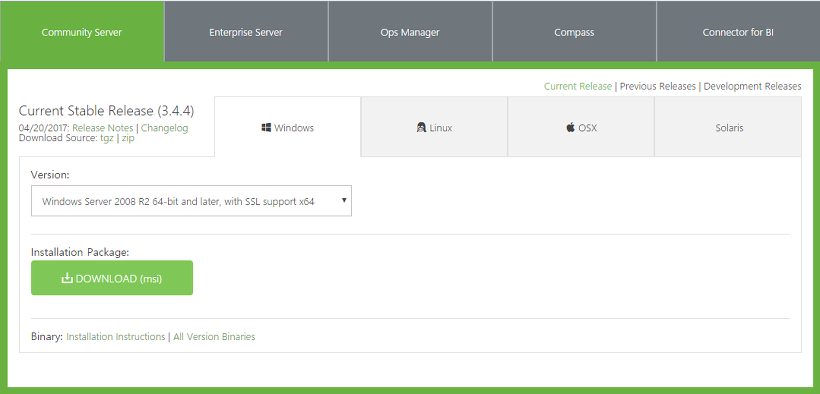
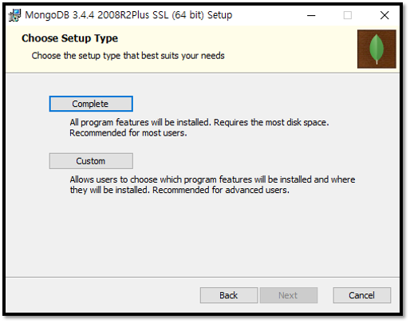
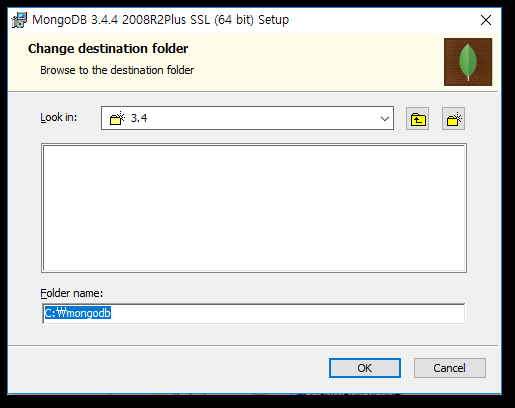

1.설치
- window에서 사용할 것이구요. 따라서 홈페이지(https://www.mongodb.com/download-center?jmp=nav#community)에서 윈도우용으로 설치를 받습니다.

- 이후 다운받은 파일을 실행 시킨 후 막 다음 버튼을 누르시지 마시고 custom으로 설치하셔서 경로에 띠어쓰기가 없도록 합니다.
띄어쓰기에 대해서는 대부분이 문제가 발생하지 않는 것으로 보이지만, 제가 집컴에 설치 후 회사 컴퓨터에서 설치시 db, log 경로 설정에서 문제가 발생하였습니다. 그래서 혹시 몰라 위와 같은 작업을 하였습니다.


2.환경변수 설정
- 제어판 - 시스템 - 고급 시스템 설정 - 환경 변수 - 시스템 변수의 PATH의 편집을 차례대로 누릅니다.

- 그리고 몽고디비의 설치 폴더내 bin폴더의 경로를 저장합니다.

3.폴더 추가 및 설정
- 몽고디비 폴더 내부에 data 폴더를 생성하고 data 폴더 내부에 db 폴더와 log 폴더를 생성합니다.

4.실행


6.실행 옵션 파일로 저장

7. Windows서비스 등록
윈도우 서비스에 등록하여 서비스 명령어만으로 쉽게 끄고 켤수 있도록 만들어 봅니다.
1 mongod.exe --config "c:\mongodb\mongod.cfg" --install --serviceName MongoDB --serviceDisplayName MongoDB //설정 파일이 있을 경우
2 mongod.exe --dbpath "c:\mongodb\data\db" --logpath "c:\mongodb\data\log\mongod.log --install --serviceName MongoDB --serviceDisplayName MongoDB //설정 파일이 없을 경우
서비스 시작
net start 서비스명
서비스 종료
net stop 서비스명
서비스 삭제
sc delete 서비스명
서비스 구동 상태 확인
sc query 서비스명